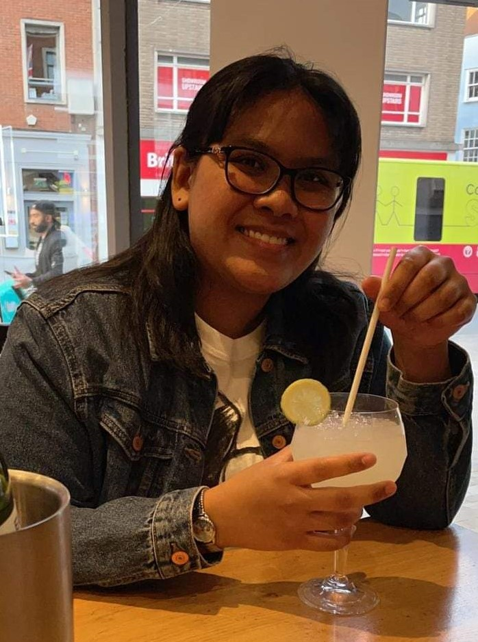

Ammy Krasawas

Professional Summary
Hardworking and ambitious student offers superior communication and problem-solving skills eager to secure
a Web Developer position. Excellent focus and attention to detail when following through with
procedures. Meticulous and detail-oriented with excellent observational, organisational and communication
skills. Eager to apply academic foundation to real-world practices.
Education
- University Studies (UEA) at West Suffolk College: 2020-2023
- Studied Interactive Immersive and Entertainment Technologies (IIET)
- Bachelor of Science - 2:1
- BTECs Computing Level 3 at West Suffolk College: 2017-2020
- Achieved D* D* D* for assignments
- Awarded West Suffolk Celebration of Achievement 2020 For Outstanding Achievement
Work Experience
- St. Edmunds Circle Health Group Hospital
Catering Assistant: 10/2023 - Present
- Served food and beverages to patients with outstanding customer service.
- Applied highest standards of food safety, consistently maintaining hygiene ratings of 5
- Molecular Dimensions Ltd.
Laboratory Assistant (Work Placement): 01/2019 - 12/2019
- Followed instructions to prepare precise chemical solutions for laboratory use.
- Logged samples and chemicals to maintain traceability and quality control.
Skills
Soft Skills
- Problem-solving
- Fast Learner
- Teamwork and Collaboration
- Excellent Communication
Hard Skills
- MS Applications
- HTML
- CSS
- Python
- Unreal Engine 4/5
Languages
- Thai - Native
- English - Fluent
Hobbies
- Reading - articles, publications, fiction and non-fiction
- Video games - 3D games and strategy games
- Technology - Learning more programming languages and building hardware
Contact Me